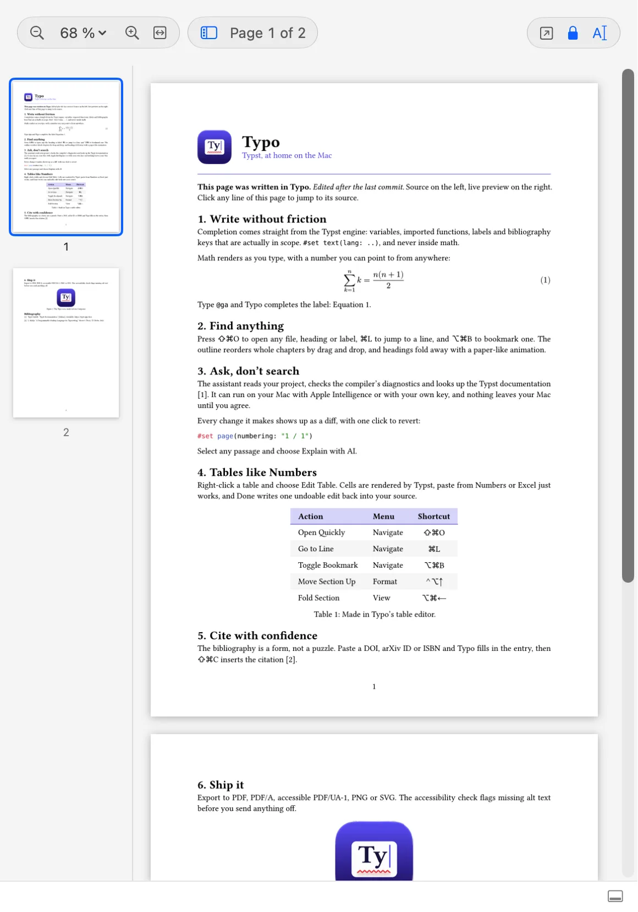
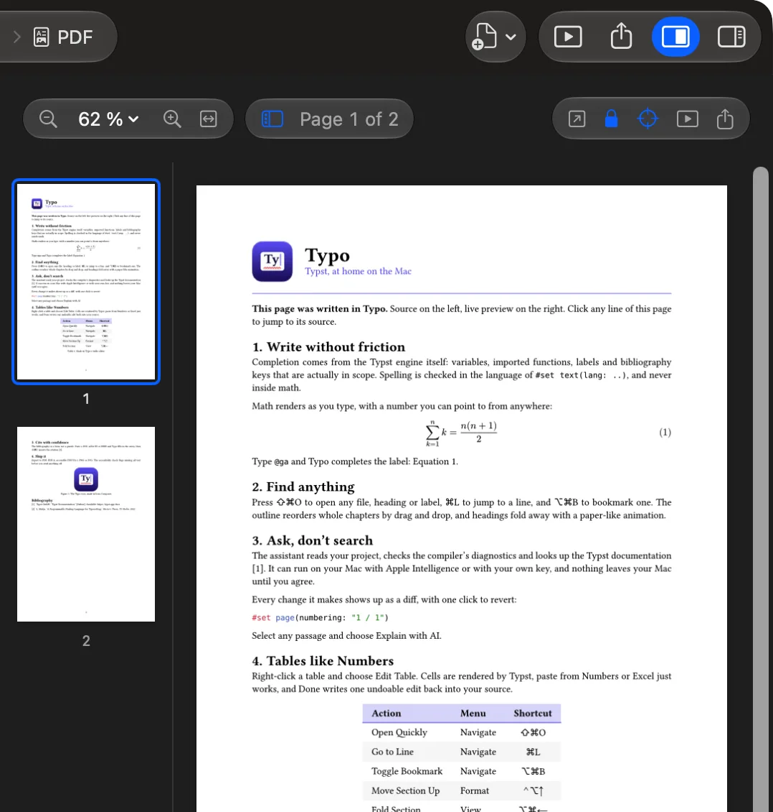
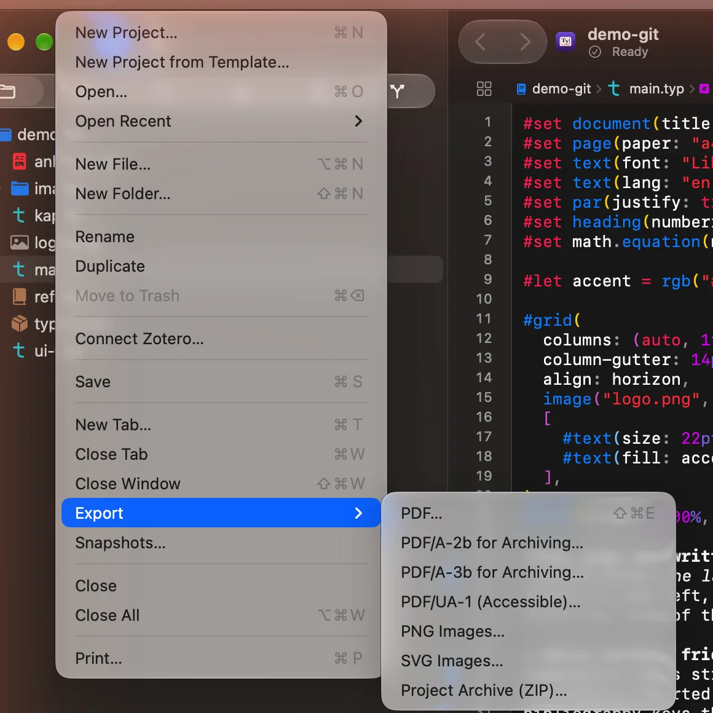

Preview and export
This page covers the preview, presentations, the export formats and printing.
Preview controls
The View menu has the preview commands.
- View › Zoom In (⌘+) and View › Zoom Out (⌘-).
- View › Fit Width (⌘0), View › Fit Page (⌘9) and View › Two Pages (⌘8).
- View › Page Thumbnails shows a strip of small pages beside the preview.
- View › Dark Preview Pages darkens the pages on screen only. Exports keep their colours.
- View › Preview Follows Cursor scrolls the preview to the caret as you move it.
- View › Lock Preview Document keeps previewing the main document instead of the file you are editing.
To find the source of something you see in the preview, click it. The editor jumps to the line that made it.


Presentation mode
- View › Start Presentation (⌥⌘Return) shows the pages full screen, one at a time. The arrow keys move between pages and Esc ends it.
- View › Start Presentation with Presenter View (⌥⇧⌘Return) shows the slides full screen on a second display. On this display it opens a window with the next slide, speaker notes, the slide number and a timer. With one display, only that window opens, so you can rehearse.
Both commands need a compiled document with at least one page.
Export formats
All export commands are in the File › Export menu. Each compiles the project and opens a save panel.
To export only some pages as PDF, type them in the Pages field of the save panel, for example 1-3, 7, 9-. Leave it empty for every page. An accessible PDF/UA-1 is always exported whole, because Typst tags only complete documents.
| Command | Result |
|---|---|
| File › Export › PDF… (⇧⌘E) | A PDF file. |
| File › Export › PDF/A-2b for Archiving… | A PDF/A-2b file, a standard for long-term archiving. |
| File › Export › PDF/A-3b for Archiving… | A PDF/A-3b file, an archiving standard that allows embedded files. |
| File › Export › PDF/UA-1 (Accessible)… | An accessible PDF/UA-1 file. |
| File › Export › PNG Images… | Every page as a PNG image. |
| File › Export › SVG Images… | Every page as an SVG image. |
| File › Export › Project Archive (ZIP)… | The project folder as a ZIP file, without hidden files such as .git. |
For PDF/UA-1, Typo can check accessibility while you write: in Settings › General, set Accessibility checks to When Exporting PDF/UA or Always. It then hints at missing alternative text, skipped heading levels, tables without a header, and a missing title or language. If a PDF/UA-1 export fails, see Troubleshooting.


Printing
Choose File › Print… (⌘P). Typo prepares the pages and opens the macOS print panel. You can save as PDF from that panel.
Missing fonts
If the document names a font that is not installed, Typst uses a replacement. Before you export or print, Typo lists the missing fonts and asks whether to continue (Export Anyway or Print Anyway). To fix the cause, put the caret on the font name, choose Navigate › Show Quick Fixes (⌘.) and pick one of the installed fonts Typo suggests. Or install the font and export again.